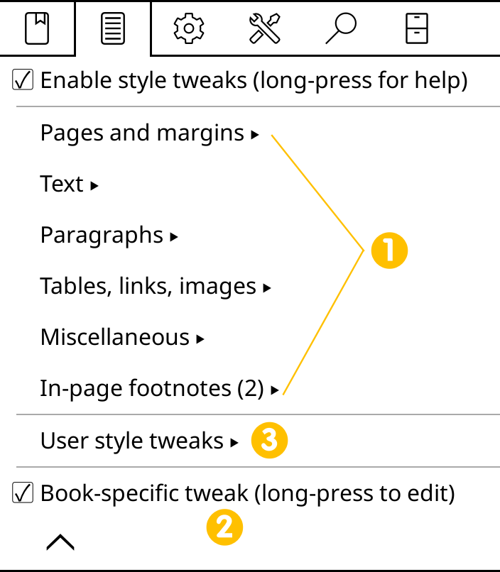
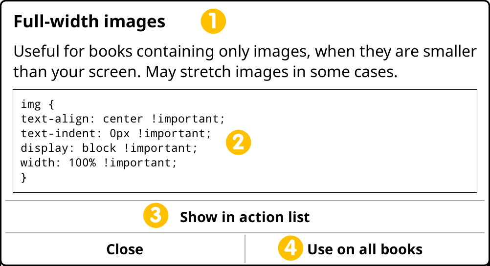
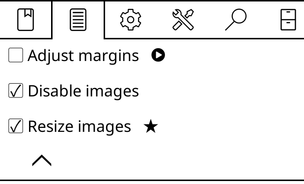
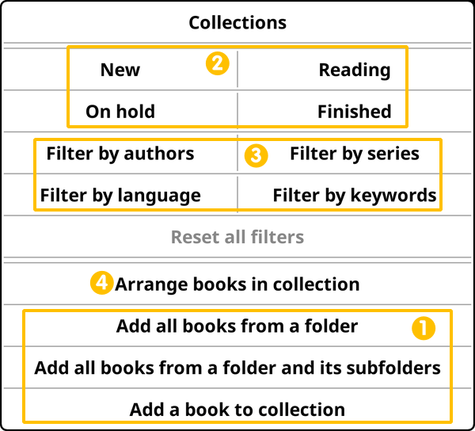

Dear devs, sections are fixed according to your suggestions. Changed parts are marked like this sentence if it is a bigger change or in green highlight as in the example below if it is a partial change:
I HAVE BEEN MODIFIED, PLEASE CHECK ME !!!
You can click on your name below to directly go to your section:
KOReader has two different versions:
- STABLE This version is the main one that you can find on the Releases page of the project GitHub. It is named like this: "KOReader 2024.11" which means this specific version is released on November 2024. This is generally a monthly release, but sometimes can take longer.
- NIGHTLY These versions are the daily compiled versions of KOReader with optimizations and fixes continuously added. Nightly releases are intended for a narrow group of testers and developers, so they might be less stable.
Normally if you are an average user, stable version is the one you should use. But in some specific cases you might need to use a nightly version:
- Your device is very new (a recently released Kobo model for example) and KOReader support has just been added in a recent nightly.
- There is a bug or problem specific to your device that is fixed already but not released yet. And you don't want to wait for the stable version to have this fix.
- After updating KOReader, you notice that a feature which you were using is removed. You don't want to lose this feature, so you can install a nightly version that still has this feature. Of course you can also go back to the previous stable release but nightly would be newer so might have more features and fixes.
This section was just a general introduction to the topic. For detailed information and asking for help about nightly versions, you can visit the discussion page: FAQ: How to track latest nightly builds
TIP If you are using KOReader on an Android device, you can use the Work Profile feature of the Android OS to test the Nightly versions without affecting your main KOReader installation. Open source applications like Shelter and Island can help you with this.
Numbers in front of the changes refers to your feedback bullet number
Feedback bullet no.3 is handled with the green menu breadcrumbs now
KOReader stores settings and extra information related to your books in the same directory as your book file. We call this metadata and it includes:
- Visual settings for the book
- Book reading progress
- Highlights, bookmarks and notes
In a recent change, we added new ways of storing this metadata to solve certain problems related to synchronization between devices. Currently there are three different methods to store the metadata and each method has its own benefits/negatives.
You can change this setting from this menu:
 / Document / Book metadata location
/ Document / Book metadata locationWARNING We strongly advise reading the section below to understand the differences and how each method works before making any changes. Otherwise there is a risk of losing your book settings, progress and annotations.
/ Document / Book metadata location: book folderThis is the default method used on a new installation of KOReader. In this method, when you copy Alice in Wonderland.epub to your device and open it for the first time, a folder named Alice in Wonderland.sdr will be created in the same directory. This directory contains the files for your settings, annotations and book progress for this book.
Benefits
- You can manually backup and restore the settings for each book.
- When you perform directory synchronization or backups with a system like Syncthing or Dropbox, your settings will be synchronized alongside your books.
- You can rename the parent directories where your book resides, this doesn't confuse KOReader.
Negatives
- 1 → If you reorganize your library by moving/renaming the book files or their accompanying .sdr folder outside of KOReader file browser, you will lose metadata of those books without any warning.
- These .sdr folders will be visible when you browse your library directories with another file browser or from your computer, which may clutter your view.
/ Document / Book metadata location: .../koreader/docsettingsThis method is essentially same as the default one above. The difference is, in this method, all .sdr folders of your books will be under a single directory which is under the KOReader main directory structure, instead of your library directory, next to the book files.
Benefits
- Book .sdr folders will only be visible to and used by KOReader. They won't clutter your view of your library directories when you browse your library with another file browser or from your computer.
Negatives
- 1 → If you reorganize your library by moving/renaming the moving/renaming library directories, book files or their accompanying .sdr folder outside of KOReader file browser, you will lose metadata of those books without any warning.
- Since your book metadata will not be in your library folders, any synchronization or backups of your library will not include them.
/ Document / Book metadata location: .../koreader/hashdocsettingsThis method is similar to the previous one as the .sdr folders will be under an internal directory. But this method is developed to address the shortcomings of the previous method. 4 → Because, normally if you rename a book outside KOReader (with the native file manager/reader of the device or from a connected computer), its .sdr folder name will no longer match and your metadata for that book will be lost. If you are only using the KOReader File Browser for file operations, this is automatically handled so there are no repercussions.
In this HASHED method, .sdr folders are not identified by the filepath/filename of the book. Instead, a partial MD5 hash will be used to link the books to their settings. 5 → This hash is used as a unique ID for the book and it is calculated based on the contents of the book file. Also same hash is used for naming its .sdr folder.
Benefits
- Book .sdr folders will only be visible to and used by KOReader. They won't clutter your view of your library directories when you browse your library directories with another file browser or from your computer.
- You can rename, move, and copy your books with another file browser or from your computer. KOReader will still recognize the books after these operations.
- 7 → In this method, KOReader associates the same .sdr folder with all copies of the book, even if these copies are on different devices. For example if you are using Syncthing, this method enables you to sync your /hashdocsettings folder alongside your book files, across many devices that all have KOReader installed. Despite the different relative paths of those books on each device, you can still get your annotations and progress synchronized across your devices. This isn't possible with other methods.
Negatives
- 8 → Any operations that modify the file directly (such as writing highlights into PDFs or downloading from Calibre) will change the file so its MD5 ID will change (unlike renaming or moving which is safe with this method). In this case KOReader wouldn't be able to recognize the book so these books will lose their metadata.
- 6 → Calculating file IDs may slow down File browser navigation when browsing larger directories.
If you have a device with a keyboard like Kindle 2 and Kindle 3, including Bluetooth keyboards and emulators, you can use the keyboard keys and shortcuts to control KOReader. Kindle 4 is supported too, which lacks a full keyboard but still has enough keys to make it functional in this context. On these devices, KOReader will enable an extra menu named Keyboard Shortcuts which you can access here:
/ Navigation / Physical buttons / Keyboard shortcutsThis menu is very similar to the Gesture Manager interface. In this menu:
- You can see the shortcuts that are available on your device
- You can see the predefined actions for some shortcuts
- You can assign actions to the available shortcuts
All of the actions in the Gesture Manager is also available for keyboard shortcut assignment. Which means you can control nearly all the functions of KOReader with these shortcuts.
In the table below, you can see the default key and shortcut assignments:
INFO Universal screenshot key is Alt + Shift + G. It is available on all screens, modes and platforms.
If there are some Kindle specific ones that I can't see on desktop, we can add them.
File browser mode | |
| Open top menu | F1 |
| Navigate to home | Home |
| Move in file list | Up / Down |
| Open selected book | Enter |
| Exit application | Esc |
Reading mode | |
| Open top menu | F1 |
| Open bottom menu | Enter |
| Back/exit application | Esc |
| → Bookmarks | Shift + Left |
| → Toggle bookmark | Shift + Right |
| → Dictionary lookup | Ctrl + D |
| → Wikipedia lookup | Ctrl + W |
| → Fulltext search | Ctrl + S |
| → File search lookup | Ctrl + F |
Links | |
| Select next page link | Tab |
| Select previous page link | Shift+Tab |
| Open selected page link | Enter |
Image viewer (long-press on image) | |
| Zoom in | Page Down |
| Zoom out | Page Up |
Highlighting | |
| Enter highlighting mode | H |
| Start/stop highlighting | Enter |
| Move highlight indicator | Left/Right Up/Down |
| Move indicator faster | Shift + Left/Right/Up/Down |
| Exit highlighting mode | Esc |
Navigating the book | |
| Page turn | Left-Right / Up-Down Page Up-Page Down |
| → Table of contents | Shift + Up |
| → Book map | Shift + Down |
| Go to the beginning | 1 |
| Go to 11% of book | 2 |
| Go to 22% of book | 3 |
| Go to 33% of book | 4 |
| Go to 44% of book | 5 |
| Go to 55% of book | 6 |
| Go to 66% of book | 7 |
| Go to 77% of book | 8 |
| Go to 88% of book | 9 |
| Go to the end | 0 |
In Skim Document dialog | |
| Go to the beginning | Q |
| Go to 11% of book | W |
| Go to 22% of book | E |
| Go to 33% of book | R |
| Go to 44% of book | T |
| Go to 55% of book | Y |
| Go to 66% of book | U |
| Go to 77% of book | I |
| Go to 88% of book | O |
| Go to the end | P |
Page zooming Only for PDF, DJVU and images | |
| Zoom to fit page | A |
| Zoom to fit page width | S |
| Zoom to fit page height | D |
| Zoom to fit content | Shift + A |
| Zoom to fit content width | Shift + S |
| Zoom to fit content height | Shift + D |
Only one heading is new "1. Built-in style tweaks" marked like this below
Style tweaks feature of KOReader allows you to modify how your book is rendered by KOReader. If you know CSS, you can jump to the examples heading, otherwise continue reading for a basic introduction. We won't go through a full CSS course here. We just want to show you the basics so when you see a style tweak, you will at least have a rough idea what it does.
We can describe an EPUB document as a HTML file + some CSS rules. These CSS rules determine how different parts of the book (headings, bold text, quotes etc.) will be shown on a reader app. When you add style tweaks to KOReader, you override the rules written by the publisher that is embedded in your book.
Let's see this on an example style tweak:
img { width: 10px !important; height: 10px !important }
In plain language this rule says: "Ignore their original size and make all the images in this book 10 pixels wide and 10 pixels high." So if you add this style tweak to KOReader, all the images in your book will be shown tiny.
Now lets explain this tweak item by item:
- img - This is a CSS selector that targets all img (image) elements in the book.
- { width: 10px !important; height: 10px !important; } - This is the declaration block. It contains the styles which will be applied to the selected img elements.
- width: 10px !important; - This first part sets the width of the targeted img elements to 10 pixels. The !important declaration is an override switch which ensures that your width value takes precedence over any other existing width declaration applied to these images.
- height: 10px !important; - This part sets the height of the targeted img elements to 10 pixels. Again, the The !important declaration is an override switch which ensures that your width value takes precedence over any other existing height declaration applied to these images.
In summary, this CSS rule is designed to set a fixed width and height of 10 pixels for all img elements in your book, ignoring their original style.
These are some useful style tweaks that you can use directly or modify according to your liking. Next heading explains how to use them in KOReader.
- Add a separator line above each heading in a book:
H1, H2, H3, H4 { border-top: 2px solid black; }
- Add some margin above the headings:
H1, H2, H3, H4 { margin-top: 2em !important; }
- Or if the book have too much margin above the headings, remove them:
H1, H2, H3, H4 { margin-top: 0 !important; }
- Add a small gap between paragraphs to make the text more readable:
p + p { margin-top: 0.5em !important; margin-bottom: 0.5em !important; }
- Disable all images in an EPUB:
img { display: none !important; }
-
Make images very small instead of disabling them:
img { width: 10px !important; height: 10px !important }
-
Make the code block sections in computer science books tidier and more readable (Here you can see an example):
pre,code { font-size: 0.6em !important; line-height: 1.8em !important; background-color: #eee !important; margin: 1em 0 !important; padding: 1em 0 !important; }
Ok, now we have seen what style tweaks are. But how we can use them? There are three types of style tweaks in KOReader:
This heading is new, and the screenshot above and below. Anything to add?
These tweaks are included in KOReader. They are the easiest to use since you just enable them from the menu to use them. You don't need to write any CSS code:
 / Style tweaks
/ Style tweaksThey come in many categories. To apply a tweak to the current book only, tick the checkbox. If you want to get more information about this tweak or enable it for all the books, long-press on its name. A dialog will appear:
- This area shows the name and description of the tweak
- This box shows the CSS code of the tweak. You can tap on this area to copy the code to the clipboard. Then you can use this code in your Book-specific tweak as explained under the next heading.
- Show in action list button allows you to toggle this tweak with a gesture or add it to a Quick Menu. See the heading named "How to use tweaks efficiently" below for more info.
- Use on all books button activate this tweak for all your books. A star (★) will appear next to its name in the menu, indicating that this tweak will be applied to all books. You can disable this with the same steps.
As you can guess from its name, this type of tweaks are only active for the book which you created them in. To create tweaks for a book, use the integrated editor which you can find here:
/ Style tweaks / Book-specific tweakTIP In the editor we have a CSS menu on the bottom toolbar. This menu contains many useful CSS syntax and properties. When you open this menu please first read the Long-press for info help. Also you can long-press on CSS items in this menu to see a description.
These group of tweaks are different from the previous ones in the way they are created. Also unlike the previous type, they are not limited to a single book. They can be applied globally to all of your books.
Procedure is roughly like this, which we will explain in detail:
- Create your user tweak file
- Transfer it to your device
- Enable your tweak from the menu
1. Creating the user tweak file:
A user style tweak is actually a normal text file with a .css extension. You can create this file:
- On your computer
- On your device if it has a text editor (like Android OS based devices)
- In KOReader's integrated text editor which you can find in plugins
You can copy / paste the examples we mentioned above to your file.
2. Transferring the file to your device:
After creating the file(s) which contain your CSS rules, save or transfer them to the styletweaks folder under your KOReader installation. Give the files descriptive names because filename will be the title of the tweak in the KOReader menu system. You can use underscores "_" in your filenames, they will be treated as spaces in the menu. You need to restart KOReader after transferring your files so it can load them.
2. Enabling the tweak:
After the restart, open a book and go to this menu:
/ Style tweaks / User style tweaksNow you should see your tweak in the list with a checkbox next to it. To apply your tweak to the current book only, tick the checkbox. If you want this tweak to be enabled for all the books, long-press on its name. A dialog will appear. Tap the menu item Use on all books. A star (★) will appear next to its name in the menu, indicating that this tweak will be applied to all books. You can disable this with the same steps. See below for an example:
In the image above, I have 3 style tweak files in the styletweaks folder under my KOReader installation. First one is disabled because checkbox is empty. Second one is enabled for this book only since checkbox is marked but there is no star. Third one is enabled for all the books (★).
You might notice that there is also a right triangle icon next to the first tweak. This means that this tweak can be activated using gestures. This will explained in the next heading.
When creating your user style tweaks you can make multiple tweak files, each modifying some part of the book like in the example image above. You can have one file for the headings, others to modify paragraphs, links etc. This modular system allows you to enable tweaks depending on your document.
As we said above, you can toggle user style tweaks from this menu location:
/ Style tweaks / User style tweaksAlso we have easier ways to toggle your style tweaks than going to the menu every time.
1. You can assign a gesture to a tweak
To do this, first we have to add our user style tweak to the list of gesture actions:
- Go to the user style tweaks menu and long-press on your style tweak
- In the dialog press the button Show in action list
- A right triangle icon will appear next to your style tweak in the menu
You can see it in the example image above, next to the Adjust margins style tweak. Now this style tweak is added to the actions list. You can find it under Gesture Manager > Reflowable documents category. It will be at the end of the list.
2. You can add a tweak to your Quick Menu
To add a tweak to your Quick Menu, first it has to be added to the actions list as described in the heading above. Then you can follow the instructions under the Quick Menu section of this guide.
You can even combine both methods and create a special Quick Menu for your style tweaks and then assign it to a gesture. This way, with a simple gesture you can access all your style tweaks and activate them as needed.
Note that in some books, titles might not be in <H1> or <H2> elements, but in something like <p class="tit123">. You can find which selectors are used for a part of text by checking the source. To achieve this, select the text around the element which you are interested in, and choose View HTML from the dialog. In the example above, your style tweak would look like this:
P.tit123 { border-top: 2px solid black; }
instead of this:
H1 { border-top: 2px solid black; }
KOReader's Collections feature can help you with arranging your library more efficiently. As a very simple definition, collections are user created lists of your books. For example you can create two collections named Fiction and Non-Fiction to arrange your books accordingly. Of course you can also use folders to do this but using collections gives you more flexibility.
Some advantages of collections compared to the folder based organization:
- Adding a book to a collection doesn't move the book file. So your books can be located in different folders but they can appear in the same collection.
- One book can be in many collections, which is not possible with folders. For example you can have a Science Fiction collection and War Fiction collection. A book can be added to both of these collections at the same time.
- You can trigger profiles with collections. This will be explained below if you are not familiar with the profiles feature of KOReader. (Of course you can trigger profiles with folders too but collections doesn't require you to move your books in order to use temporary profiles for example.)
You can create collections to mirror any kind of categorization. Some example ideas:
- Genres: Fiction, non-fiction, memoir...
- Book status: Currently reading, want to read, next, did not finish...
- Series: Lord of the Rings, Harry Potter...
- Document type: Books, scientific articles, web articles...
You can create collections from the Collections dialog located here:
You can access this dialog from the reader view or from the File Browser. When you open this menu, it will show you a list of your collections. By default you will see Favorites there as a collection item which includes the books you have already added to your Favorites list.
- Adding a new collection: Use the hamburger menu located at the top left corner of this screen > New collection
- Removing a collection: Long tap on the collection name > Remove collection
- Renaming a collection: Long tap on the collection name > Rename collection
- Changing the order of your collections: Use the hamburger menu located at the top left corner of this screen > Arrange collection
This heading is rewritten to include batch addition + the screenshot
There are three different places in KOReader where you can add books to your collections:
1. From the File Browser and History screen
You can add a book to your collections from the File browser or History screen. From the History screen you can add books one at a time. Long press on the book and choose Add to collection. Then you can choose which collection(s) you want to add this book to.
If you are adding several books, you can do this from the File browser. For multiple books this is the procedure:
- Long press on a book
- Choose Select from the popup menu
- Select other books
- Tap the checkmark (✔️) icon at the top-right corner
- Tap Collections
For adding a single book, just long-press on it in the File browser and choose Collections from the popup menu.
2. From the Collections menu
This method allows you to add single and multiple books to your Collections. Biggest difference from the File browser method is that you can add whole folders and their subfolders to your collections at once. This is very useful if your books are already arranged in folders. For example if all your science fiction books are in a single folder, you can create a collection named Science fiction and add this folder at once.
In the image above, Box 1 shows the book adding options. You can reach this menu from the collections screen's hamburger menu:
- Add all books from a folder: As its name says, this options allows you to select a folder to add all the books in it to this collection. Note that this option doesn't add the books in subfolders of the chosen folder. For example if you select your Fiction folder and you have folders named Science Fiction and War Fiction under it, they won't be added with this option.
- Add all books from a folder and its subfolder: This is the option that will add all the subfolders of your chosen folder. Be careful with this option because it will go down all the way while adding the books. So if you have many levels of nested folders, there might be too many books than you thought.
- Add a book to collection: This is the basic option that will allow you to add a single book.
You can remove a book from collections from the File browser, History screen or the Collections screen. In the File browser and History screens, long press on the book and choose Add to collection. You will see a checkmark next to the collections that you added this book to. Uncheck the ones by tapping on it to remove the book from that collection. In the Collections screen you can long press on the book and choose Remove from collection.
This heading is new which also refers to the new screenshot above
Collections can be very crowded but KOReader allows you to find your books easily by providing many filtering options. If you look at the image above, you can see the filtering options in Box 2 and Box 3. Box 2 allows you to filter by book status (new, reading, finished, on hold) and Box 3 allows you to filter by book metadata (author, series, language, keywords). And also you can combine these two groups of filters like this example: "Show me the new books in this collection which are written by Isaac Asimov (Filter by authors -> Isaac Asimov) that I haven't started yet (Filter by status -> New)."
You can update the book metadata by long-pressing on the book in File browser and choosing Book information from the menu. In the popup window you can long-press on any field to change the metadata like author or keywords. But we suggest you to use Calibre for this task, a third-party application which makes managing your book metadata much easier.
This heading is new
There are two types of search you can perform in collections: You can search for a phrase in the book titles and metadata or you can also search inside the book texts. You can open the search dialog from:
If you want to perform a search in the book texts, please keep these points in mind:
- This type of search is only available if you open the collections from the file browser. It is not available from the reading screen.
- This search can be slow (around 2 seconds per book in the collection). So if you have a crowded collection, it might take a long time.
Search function depends on where you are in the collections window. If you are at the root level where you can see all your collections, search will be performed on all collections. If you want to search only in a specific collection, you have to tap and enter the collection. This is especially important if you are also searching in the book texts because it is a slow operation.
When you perform a search, results will be automatically saved as a new collection.
This heading is new
Your collections can be used with the profiles feature of KOReader. If you don't know about profiles yet, here is a description from our Profiles section:
A profile is basically a collection of actions that can be triggered with a single gesture (like a macro).
As an example, imagine that when reading some type of books, you always:
- Rotate the screen to landscape orientation
- Increase the font size and contrast and
- Turn the screen light on
With the profiles plugin, you can do all these at once with a single action.
You can run a profile manually but real power of profiles can be unleashed with its auto-execute feature. Using this feature, you can trigger a profile depending on some conditions. Here is a link to the relevant heading for more information: ***. For now we will just explain one trigger condition here: Collections.
Basically you can create some profiles and set them to auto-execute if an opened book is in some specific collection. Some useful examples:
- You can add all your manga to a Manga collection and make a profile to switch the page turn direction to Right-To-Left and to invert page turn taps and swipes when you open a manga book from this collection.
- You can add your comic books to a collection, which can trigger a profile to decrease the screen refresh interval to every page to avoid ghosting.
- You can add your problematic PDFs to a collection, so when you open them Auto OCR or Reflow mode is activated with a profile.
This heading is new
You can run a profile manually as explained above but real power of profiles can be unleashed with its auto-execute feature. Using this feature, you can trigger a profile depending on some conditions and sub-conditions:
| Trigger | Sub-options |
| On KOReader start Run this profile every time KOReader starts. Note that this is only possible when KOReader is starting with the File browser or Last file. | - |
| On wake-up Run this profile every time device wakes up | - |
| On rotation Run this profile when screen rotates to the selected rotation(s). Examples: Change to double column layout when device rotates to landscape. Activate night mode when device rotates upside down. |
|
| On showing folder Run this profile when you enter this folder in file browser. You can use this trigger to change the display mode of file browser. For example when you enter a certain folder you can change the display mode from mosaic to detailed view. I am not sure of this, is my text correct? |
|
| On book opening
This trigger is executed when you open a book (optionally) combined with specific sub-conditions. Are these sub-conditions AND or OR matching? |
|
| On book closing
This option is same as above but it triggers when you close a book. What is this useful for, some synchronizations? |
|
Profile examples:
This heading is new
Here are some profile examples from our devs to give you ideas about using this powerful feature of KOReader. Examples also include auto-execute conditions and collections features:
- Enable two columns mode when you turn your device to landscape orientation.
- Enable night mode when you turn your device upside down.
- Add all your manga to a collection. Then create a profile which switches the page turn direction to Right-To-Left and inverts the page turn taps and swipes when you open a manga book from this collection.
- Add your comic books to a collection, which can trigger a profile to decrease the screen refresh interval to every page to avoid ghosting.
- Trigger a profile to adjust typeface, font size and set two-column mode when opening a file for the first time from the Periodicals folder.
- Add your problematic PDFs to a collection, so when you open them Auto OCR or Reflow mode is activated with a profile.
- Switch display mode (covers, detailed list etc.) of file browser when you enter certain folders.
- Toggle off reading statistics when opening a book from a Reference Books collection. Toggle statistics back on when closing the book.
- If you expose the style tweaks in the gesture manager, you can create a profile to enable or disable them based on certain conditions. So you can trigger a able publisher styles+apply these user style tweaks profile based on book location/collection or by adding a keyword to the metadata of the book for example. See the style tweaks section for more info***
✅ indicator icons
✅ Editing the text of a highlight
✅ colorful highlights
✅Changing how the added notes are shown in the Bookmarks List
✅ Backing up your KOReader settings
✅Bulk file operations
✅ Reader user interface
✅ PDF highlights
✅ status bar ✅ reference pages
THIS HEADING IS WAITING FOR THE "AUTO OCR LANGUAGE RECOGNITION" PR FRENZIE - PLEASE UPDATE ME / SKIP IT FOR NOW SINCE IT IS NOT COMPLETE
OCR (Optical Character Recognition) is the process of extracting text from images into machine readable format. In KOReader context, it is generally used for extracting text from scanned book pages in PDF files. KOReader relies on Tesseract Open Source OCR Engine for this task (https://github.com/tesseract-ocr/tessdoc).
In order to use this feature you need to:
- Install Tesseract language data to your KOReader:
Download the data file for your desired OCR language from this GitHub repository -> https://github.com/tesseract-ocr/tessdata_fast These data files have the 3 letter country code as name with a .traineddata extension. For example Spanish language OCR data file is named as spa.traineddata.
After downloading, copy this language data file to the koreader/data/tessdata folder on your device.
- Add this language to the koreader/defaults.lua configuration file:
(if your OCR language is English or Chinese this is not necessary)
INFO Buttons on OCR menu will not function until you install the necessary Tesseract files. Details of this process can be read in the related wiki page: https://github.com/koreader/koreader/wiki/Dictionary-support#dictionary-lookups-in-scanned-pages